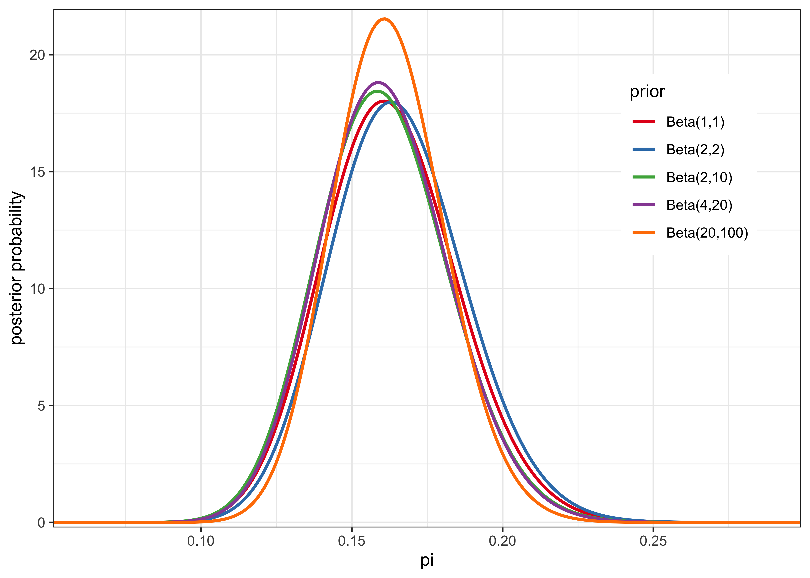

21 Assignment 2
2021-08-30
21.1 Setup
knitr::opts_chunk$set(echo = TRUE, comment = "#>", dpi = 300)
for (f in list.files(here::here("src"), pattern = "R$", full.names = TRUE)) {
source(f)
}
# Libraries
library(aaltobda)
library(glue)
library(tidyverse)
# Data
algae <- readLines(here::here("data", "algae.txt"))
algae <- as.integer(algae)21.2 Exercise 1. Inference for binomial proportion
Algae status is monitored in 274 sites at Finnish lakes and rivers. The observations for the 2008 algae status at each site are presented in file “algae.txt” (’0’: no algae, ’1’: algae present). Let \(\pi\) be the probability of a monitoring site having detectable blue-green algae levels and \(y\) the observations in algae. Use a binomial model for the observations \(y\) and a \(\text{Beta}(2, 10)\) prior for binomial model parameter \(\pi\) to formulate a Bayesian model.
a) Formulate (1) the likelihood \(p(y|\pi)\) as a function of \(\pi\), (2) the prior \(p(\pi)\), and (3) the resulting posterior \(p(\pi|y)\).
print(head(algae))#> [1] 0 1 1 0 0 0print(paste("Number of data points:", length(algae)))#> [1] "Number of data points: 274"print(paste("Number of 1's:", sum(algae)))#> [1] "Number of 1's: 44"print(paste("Prop. of 1's:", round(mean(algae), 3)))#> [1] "Prop. of 1's: 0.161"- likelihood: \(p(y|\pi) = \text{Beta}(44, 274-44)\)
- prior: \(p(\pi) = \text{Beta}(2, 10)\)
- posterior: \(p(\pi|y) = \text{Beta}(46, 240)\)
b) What can you say about the value of the unknown according to the observations and your prior knowledge? Summarize your results with a point estimate (i.e. \(E(\pi|y)\)) and a 90% posterior interval.
Some test data provided by the question to check if I’m on the right track.
algae_test <- c(0, 1, 1, 0, 0, 0)beta_point_est <- function(prior_alpha, prior_beta, data) {
y <- sum(data)
n <- length(data)
posterior <- (prior_alpha + y) / (prior_alpha + prior_beta + n)
return(posterior)
}
posterior_test <- beta_point_est(
prior_alpha = 2, prior_beta = 10, data = algae_test
)
stopifnot(round(posterior_test, 7) == 0.2222222)
beta_point_est(prior_alpha = 2, prior_beta = 10, data = algae)#> [1] 0.1608392beta_interval <- function(prior_alpha, prior_beta, data, prob = 0.9) {
y <- sum(data)
n <- length(data)
p_low <- (1 - prob) / 2
q_low <- qbeta(p_low, prior_alpha + y, prior_beta + n - y)
q_high <- qbeta(1 - p_low, prior_alpha + y, prior_beta + n - y)
return(c(q_low, q_high))
}
posterior_interval_test <- beta_interval(
prior_alpha = 2, prior_beta = 10, data = algae_test, prob = 0.9
)
stopifnot(round(posterior_interval_test, 7) == c(0.0846451, 0.3956414))
beta_interval(prior_alpha = 2, prior_beta = 10, data = algae, prob = 0.9)#> [1] 0.1265607 0.1978177c) What is the probability that the proportion of monitoring sites with detectable algae levels \(\pi\) is smaller than \(\pi_\theta = 0.2\) that is known from historical records?
beta_low <- function(prior_alpha, prior_beta, data, pi_0 = 0.2) {
y <- sum(data)
n <- length(data)
prob <- pbeta(pi_0, prior_alpha + y, prior_beta + n - y, lower.tail = TRUE)
return(prob)
}
test_prob <- beta_low(
prior_alpha = 2, prior_beta = 10, data = algae_test, pi_0 = 0.2
)
stopifnot(round(test_prob, 7) == 0.4511238)
beta_low(prior_alpha = 2, prior_beta = 10, data = algae, pi_0 = 0.2)#> [1] 0.9586136d) What assumptions are required in order to use this kind of a model with this type of data? (No need to discuss exchangeability yet, as it is discussed in more detail in BDA Chapter 5 and Lecture 7.)
We need to assume that the data is independently and identically distributed, which included the assumption that the data is exchangable. We are also assuming the data is accuractely collected in a consistent manner. We are assuming there are no subgroups within the data that would necessitate a hierarchical model to account for the random effects variation.
e) Make prior sensitivity analysis by testing a couple of different reasonable priors and plot the different posteriors. Summarize the results by one or two sentences.
# Some interesting priors.
priors <- tibble::tribble(
~prior_alpha, ~prior_beta,
1, 1,
2, 2,
2, 10,
4, 20,
20, 100,
) %>%
mutate(
lbl = glue("Beta({prior_alpha},{prior_beta})"),
lbl = fct_inorder(lbl)
)
priors#> # A tibble: 5 × 3
#> prior_alpha prior_beta lbl
#> <dbl> <dbl> <fct>
#> 1 1 1 Beta(1,1)
#> 2 2 2 Beta(2,2)
#> 3 2 10 Beta(2,10)
#> 4 4 20 Beta(4,20)
#> 5 20 100 Beta(20,100)posterior_distribution <- function(prior_alpha,
prior_beta,
data,
step = 0.001,
...) {
y <- sum(data)
n <- length(data)
pi <- seq(0, 1, step)
posterior <- dbeta(pi, prior_alpha + y, prior_beta + n - y)
return(tibble(pi = pi, posterior = posterior))
}
# Get the posterior distribution for each prior.
posteriors <- priors %>%
mutate(posterior = purrr::map2(
prior_alpha, prior_beta, posterior_distribution,
data = algae
)) %>%
unnest(posterior)
# Plot the most interesting region of the posteriors.
posteriors %>%
filter(0.05 < pi & pi < 0.3) %>%
ggplot(aes(x = pi, y = posterior)) +
geom_line(aes(group = lbl, color = lbl), size = 0.9) +
scale_x_continuous(expand = expansion()) +
scale_y_continuous(expand = expansion(mult = c(0.01, 0.02))) +
scale_color_brewer(type = "qual", palette = "Set1") +
theme_bw() +
theme(legend.position = c(0.85, 0.7)) +
labs(x = "pi", y = "posterior probability", color = "prior")
The posterior is not very sensitive to the prior save for the exception of an overly-confident prior of \(\text{Beta}(20, 100)\). This is likely due to the large amount of data, meaning that the likelihood dominated the posterior.
sessionInfo()#> R version 4.1.2 (2021-11-01)
#> Platform: x86_64-apple-darwin17.0 (64-bit)
#> Running under: macOS Big Sur 10.16
#>
#> Matrix products: default
#> BLAS: /Library/Frameworks/R.framework/Versions/4.1/Resources/lib/libRblas.0.dylib
#> LAPACK: /Library/Frameworks/R.framework/Versions/4.1/Resources/lib/libRlapack.dylib
#>
#> locale:
#> [1] en_US.UTF-8/en_US.UTF-8/en_US.UTF-8/C/en_US.UTF-8/en_US.UTF-8
#>
#> attached base packages:
#> [1] stats graphics grDevices datasets utils methods base
#>
#> other attached packages:
#> [1] forcats_0.5.1 stringr_1.4.0 dplyr_1.0.7 purrr_0.3.4
#> [5] readr_2.0.1 tidyr_1.1.3 tibble_3.1.3 ggplot2_3.3.5
#> [9] tidyverse_1.3.1 glue_1.4.2 aaltobda_0.3.1
#>
#> loaded via a namespace (and not attached):
#> [1] Rcpp_1.0.7 lubridate_1.7.10 here_1.0.1 clisymbols_1.2.0
#> [5] assertthat_0.2.1 rprojroot_2.0.2 digest_0.6.27 utf8_1.2.2
#> [9] R6_2.5.0 cellranger_1.1.0 backports_1.2.1 reprex_2.0.1
#> [13] evaluate_0.14 highr_0.9 httr_1.4.2 pillar_1.6.2
#> [17] rlang_0.4.11 readxl_1.3.1 rstudioapi_0.13 jquerylib_0.1.4
#> [21] rmarkdown_2.10 labeling_0.4.2 munsell_0.5.0 broom_0.7.9
#> [25] compiler_4.1.2 modelr_0.1.8 xfun_0.25 pkgconfig_2.0.3
#> [29] htmltools_0.5.1.1 tidyselect_1.1.1 bookdown_0.24 fansi_0.5.0
#> [33] crayon_1.4.1 tzdb_0.1.2 dbplyr_2.1.1 withr_2.4.2
#> [37] grid_4.1.2 jsonlite_1.7.2 gtable_0.3.0 lifecycle_1.0.0
#> [41] DBI_1.1.1 magrittr_2.0.1 scales_1.1.1 cli_3.0.1
#> [45] stringi_1.7.3 farver_2.1.0 renv_0.14.0 fs_1.5.0
#> [49] xml2_1.3.2 bslib_0.2.5.1 ellipsis_0.3.2 generics_0.1.0
#> [53] vctrs_0.3.8 RColorBrewer_1.1-2 tools_4.1.2 hms_1.1.0
#> [57] yaml_2.2.1 colorspace_2.0-2 rvest_1.0.1 knitr_1.33
#> [61] haven_2.4.3 sass_0.4.0